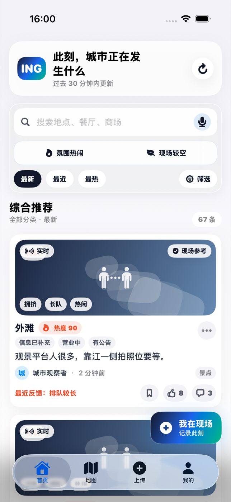
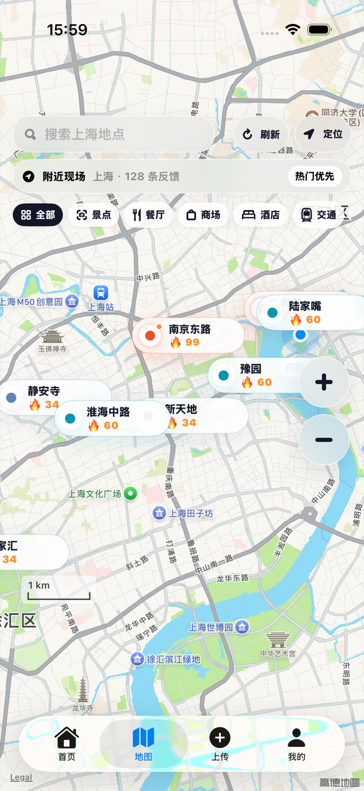
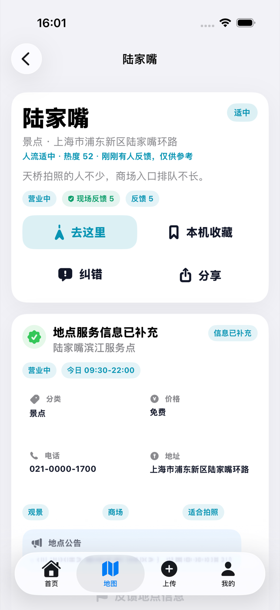
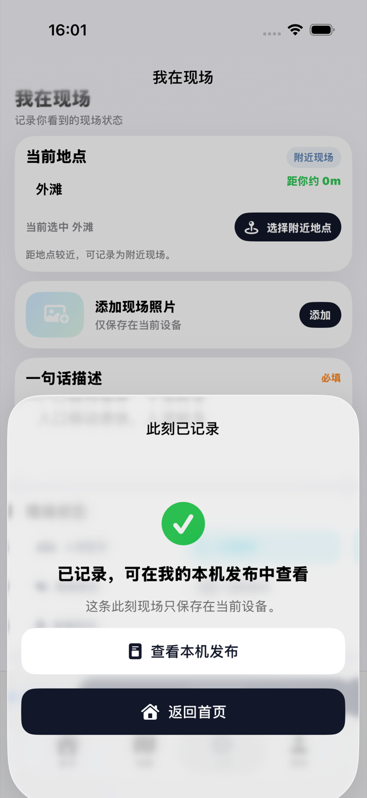
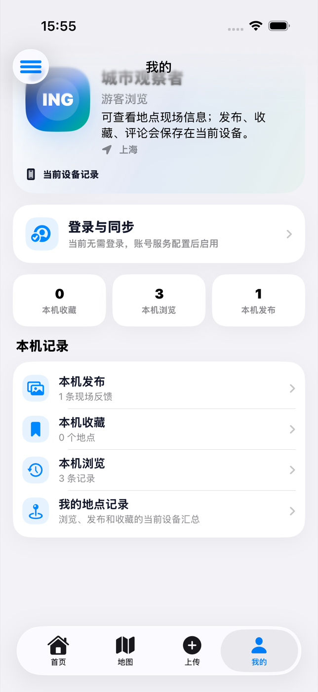

发现附近地点
从首页浏览地点现场参考，按距离、热度和类别找到想进一步了解的地方。
ING 时刻 · iOS
已在 App Store 上线
浏览地图和附近地点，查看地点详情；把自己的现场观察、照片、收藏和浏览历史保存在当前设备。
当前公开版本 1.0 · 支持 iPhone 与 iPad

主要功能
ING 围绕线下地点组织浏览和记录体验，让地图、详情与当前设备内的数据自然连在一起。
从首页浏览地点现场参考，按距离、热度和类别找到想进一步了解的地方。
在地图上查看附近地点，也可以搜索其他城市和地点，快速进入详情。
集中查看地点状态、地址、营业信息、现场参考和导航入口。
添加状态、备注与照片，把一条现场观察保存在当前设备中。
整理常去地点与最近浏览内容，在“我的”页面重新找到它们。
按地点和时间回顾保存的记录与照片，并可导出自己的本机数据。
应用界面
以下界面来自当前 App Store 公开版本，与可下载安装的 ING 图标及应用内容一致。




在手机上可左右滑动查看全部界面
用于附近地点和地图展示；拒绝授权后仍可使用其他功能。
当前设备内保存的观察与照片不会上传为公开内容。
当前版本不含广告、订阅、内购或第三方行为追踪。
下载与支持
当前公开版本 1.0，可通过 App Store 下载。应用由上海晶水济环保科技有限公司提供。